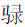

八月二十六日早九时半抵昆明。同行的是罗莘田先生。他是我的幼时同学，现在已成为国内有数的音韵学家。老朋友在久别之后相遇，谈些小时候的事情，都快活得要落泪。
他住昆明青云街靛花巷，所以我也去住在那里。
住在靛花巷的，还有郑毅生先生，汤老先生 [1] ，袁家骅先生，许宝

先生，郁泰然先生。毅生先生是历史家，我不敢对他谈历史，只能说些笑话，汤老先生是哲学家，精通佛学，我偷偷的读他的晋魏六朝佛教史，没有看懂，因而也就没敢向他老人家请教。家骅先生在西南联大教授英国文学，一天到晚读书，我不敢多打扰他，只在他泡好了茶的时候，搭讪着进去喝一碗，赶紧告退。他的夫人钱晋华女士常来看我。到吃饭的时候每每是大家一同出去吃价钱最便宜的小馆。宝 先生是统计学家，年轻，瘦瘦的，聪明绝顶。我最不会算术，而他成天的画方程式。他在英国留学毕业后，即留校教书，我想，他的方程式必定画得不错！假若他除了统计学，别无所知，我只好闭口无言，全没办法。可是，他还会唱三百多出昆曲。在昆曲上，他是罗莘田先生与钱晋华女士的“老师”。罗先生学昆曲，是要看看制曲与配乐的关系，属于哪声的字容或有一定的谱法，虽腔调万变，而不难找出个作谱的原则。钱女士学昆曲，因为她是个音乐家。我本来学过几句昆曲，到这里也想再学一点。可是，不知怎的一天一天的度过去，天天说拍曲，天天一拍也未拍，只好与许先生约定：到抗战胜利后，一同回北平去学，不但学，而且要彩唱！郁先生在许多别的本事而外，还会烹调。当他有工夫的时候，便作一二样小菜，沽四两市酒，请我喝两杯。这样，靛花巷的学者们的生活，并不寂寞。当他们用功的时候，我就老鼠似的藏在一个小角落里读书或打盹；等他们离开书本的时候，我也就跟着“活跃”起来。
此外，在这里还遇到杨今甫、闻一多、沈从文、卞之琳、陈梦家、朱自清、罗膺中、魏建功、章川岛……诸位文坛老将，好像是到了“文艺之家”。关于这些位先生的事，容我以后随时报告。